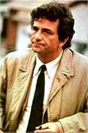
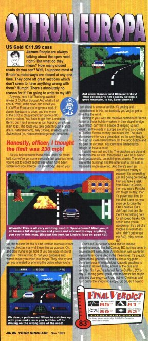

|
|
The scene: A penthouse office at a certain computer magazine publisher's offices in Bath. A window view overlooks the sprawling metropolis. A middle-aged man wearing an expensive suit stands behind his desk, surveying the view from his office. A knock at his door is followed by the entrance of a dishevelled-looking man in a raincoat, smoking a cigar. |
 |
|
'Uh, hello?' The man turns to face his guest. 'Yes?' 'Uh, I'm sorry, who are you?' 'I might ask you the same question!' 'Uh, my name's Columbo, I'm with the police department. We're looking into a little mishap that occured a while back...' 'Oh?' 'Are you the publisher, sir?' 'I am.' 'Well, then maybe you can clear up this little misunderstanding. See, a few years ago a man working for you named James Leach reviewed a game for the Sinclair Spectrum...' 'The Spectrum? What magazine was that for? Let me guess, a comedy article for Playstation Plus?' 'Uh, no, sir, it was a real review, for Your Sinclair.' 'Your Sinclair? But we shut that down years ago!' 'I know, sir, but this has only just been brought to our attention. Anyway, as I was saying, Mr Leach reviewed a game called Outrun Europa, in issue 71 of Your Sinclair. That was the November issue of '91, so I guess he actually wrote the article about a month earlier?' 'That's correct, Lieutenant. What was the problem?' 'The review was accompanied by three screenshots. They were all in full colour. But when the game itself was finally released, it was in black and white. Do you see what I'm getting at, sir?' 'Are you suggesting that we bodged a review?' 'Well, sir, with all due respect, it wouldn't be the first time in your company's history, would it?' 'I resent that insinuation! I'm sure there's a simple explanation. Maybe the screenshots were mixed up with a different format, like the C64 version, or something.' 'Oh, right. Well, I can see how that could happen, in a busy environment like a magazine publishers.' 'Good, I'm glad that's cleared that up.' 'So am I, sir, so am I.' Columbo heads for the door. As he reaches it he stops, puts a hand to his forehead and turns around. 'Just one more thing, sir.' 'Yes?' 'If the screenshots were mixed up, why does Mr Leach refer to the colour in the review?' 'What?' 'It says right here, sir...' Columbo begins rummaging through his pockets, finally pulling out a scrap of paper. 'Ah, here it is... "The graphics are big and dead colourful as well, this causes a wee bit of clash occasionally, but nothing too drastic." There's no colour clash in Outrun Europa, sir, because it's all in black and white.' 'So... you're suggesting that we put out a review for a game without actually playing the game. That's preposterous! Why would we risk the damage to the magazine's reputation like that?' 'Your Sinclair was shut down a couple of years later, wasn't it?' 'Yes...' 'Maybe you did want to damage the magazine's reputation.' 'Why, I... This is all of no consequence, anyway. This all happened more than eight years ago.' 'I'm afraid there's no statutory limit on a crime like this, sir.' 'You'll never prove it in court! Where are your witnesses?' 'Maybe you're right, sir. Maybe you're right. But I can tell you this; pretty soon we're going to find Mr Leach. And when we do, he'll be able to tell us exactly what happened. And whatever the truth is... the people will be told.' |
 |
{kind=link}
| Back to Pssst! |